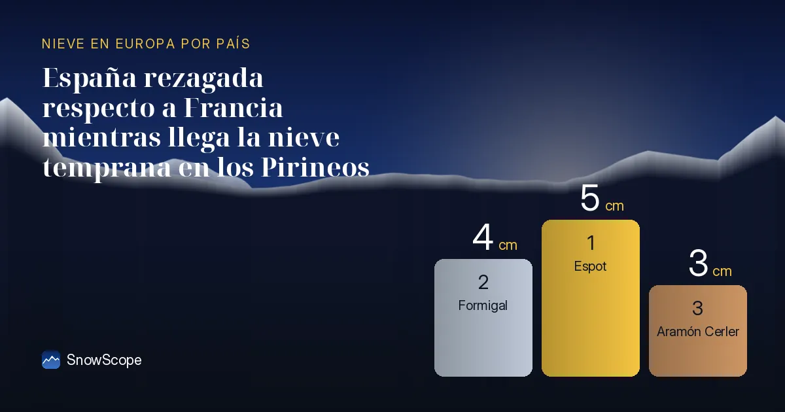

España rezagada respecto a Francia mientras llega la nieve temprana en los Pirineos
La cobertura de nieve en España es prácticamente nula en este momento, mientras que al otro lado de la frontera en Francia ya alcanza el 13%. Las primeras nieves de noviembre están llegando a los picos altos españoles, pero la temporada todavía está tomando forma.
Consulta la previsión de nieve en tiempo real de Espot en la app SnowScopeEspesor de nieve, alertas de nieve polvo y mapa 3D, gratis.
España versus Francia: una brecha pronunciada
Sobre el terreno hoy, España tiene nieve en una fracción minúscula de sus montañas altas—alrededor del 0,3%—mientras que Francia ya muestra cobertura blanca en el 13% del terreno comparable. Esta brecha cuenta una historia típica de principios de noviembre en los Pirineos: las laderas orientadas al Atlántico de Francia captaron mejor la humedad de principios de temporada, y los Alpes recibieron más que el lado español. Los Pirineos españoles se encuentran en una sombra de lluvia respecto al Atlántico, así que se quedan atrás cuando los sistemas de tormentas llegan desde el oeste.
Lo que importa para los esquiadores es que las estaciones españolas están empezando a coger nieve ahora. Espot, Formigal, Aramón Cerler y Candanchú midieron nieve nueva en las últimas 72 horas, con los mejores resultados en los Pirineos españoles—cayeron 26 cm en toda esa región. Es principios de temporada y la nieve es escasa, pero el patrón está cambiando.
| Country | White | Deepest resort | Next 7 days |
|---|---|---|---|
| España | 0 % | Espot | 5 cm |
| Andorra | 7 % | Ordino-Arcalis | 9 cm |
| Francia | 13 % | Orelle | 125 cm |

Los Pirineos españoles lideran el país
Los Pirineos españoles han acumulado 26 cm de nieve nueva en los últimos tres días, con mucha diferencia el mejor desempeño en España. Las montañas de Galicia vieron 7 cm, y la Cordillera Cantábrica logró 5 cm. La altura importa: la nieve cayó principalmente por encima de 2000 m, donde SnowScope muestra que el 9% del terreno está cubierto. Por encima de 2500 m, la profundidad media es de 3 cm y el 46% del terreno elevado tiene algo de blanco.
Sobre el terreno, Espot lidera las estaciones españolas con 5 cm de profundidad medida en la estación, aunque Formigal, Aramón Cerler, Candanchú y Tavascan tienen 3-4 cm. Estas son profundidades de principios de temporada—lo suficientemente escasas como para que las rocas y el terreno se vean, especialmente en laderas orientadas al sur donde el sol sigue siendo fuerte en noviembre. Los esquiadores que se dirijan hacia arriba deben consultar los informes locales y elegir sus líneas con cuidado.
Francia sigue liderando con diferencia
Al otro lado de la frontera, el líder francés Orelle se encuentra en 130 cm—25 veces más profundo que Espot. Incluso la mejor ladera de Andorra, Ordino-Arcalís, tiene 6 cm, así que el contraste no es solo España versus Francia sino España versus todos en el mismo rango. La razón: los sistemas atlánticos de Francia traen humedad desde el Golfo de Vizcaya, y los Alpes del norte y los Pirineos se encuentran justo en ese camino. Las montañas secas de España reciben lo que sobra.
Llega nieve esta semana
Las perspectivas son mejores. SnowScope prevé 1 cm en los próximos tres días, llegando a 5 cm durante los próximos siete días. La fecha clave es el 25 de noviembre, cuando podrían caer 9 cm. Después de eso, la segunda semana muestra otra ronda: 22 cm en la primera semana (que termina el 22 de noviembre) y 20 cm en la segunda semana (27 de noviembre a 3 de diciembre). Estas son estimaciones para las montañas altas, no medidas; se precisarán conforme se actualicen los pronósticos.
Por altura, la nieve seguirá cayendo por encima de 2000 m, donde se quedará. Las elevaciones más bajas verán lluvia o aguanieve por ahora.
Lo que muestra la tendencia
Hace tres días, España tenía 310 km² de nieve. Eso bajó a 240 km² el 17, luego se recuperó a 280 km² el 18. Hoy vemos un salto brusco a 530 km². Esto no es una falsa alarma—refleja la primera descarga importante golpeando el terreno elevado en las últimas 24 horas. La nieve es real, pero aún es dispersa y principalmente por encima de 2000 m. Conforme caiga más esta semana, la cobertura subirá y las profundidades se engruesarán.
Dónde se coloca la nieve por altura
Por debajo de 2000 m: nada. La banda de 2000-2500 m muestra cobertura del 9% y profundidad media de 0 cm—la nieve allí es escasa y a menudo se está fundiendo. Por encima de 2500 m es donde deberían mirar los esquiadores: cobertura del 46% y media de 3 cm. Esta banda incluye las cimas de Espot (2290 m), Formigal (2264 m), Aramón Cerler (2618 m), Candanchú (2238 m) y Tavascan (2196 m). Los picos más altos—Aramón Cerler y los cercanos—retienen la mejor nieve ahora.
Consejos para esquiadores
- Dirígete a los Pirineos españoles si vas esta semana; las montañas de Galicia y la Cordillera Cantábrica se quedan muy atrás. Mantente en pistas por encima de 2000 m; por debajo, la nieve es escasa o está mojada.
- Espot y Formigal lideran el pronóstico para los próximos tres días (3-8 cm entrante); Aramón Cerler y Candanchú van muy cerca. Los cuatro deberían ver acumulación real antes del 22 de noviembre.
- Consulta el boletín de aludes oficial antes de esquiar fuera de pista; la nieve fresca en laderas empinadas conlleva riesgo a principios de temporada, incluso cuando las profundidades se ven modestas.
- Las laderas orientadas al sur se ablandarán rápido con el sol de noviembre. El terreno orientado al norte mantiene la mejor nieve durante todo el día.
- El domingo 25 de noviembre es el día más nevado en el pronóstico (9 cm). Planifica alrededor de esa fecha si puedes; las profundidades serán mayores y la estabilidad superior a la que hay ahora.
Sobre estas cifras
Los espesores de nieve de las estaciones son la nieve más profunda en las pistas altas en la fecha indicada; son estimaciones para una zona, no una medida en un punto. Las previsiones pueden cambiar. Consulta siempre el boletín oficial de aludes antes de salir fuera de pista.
Citar este informe
Para investigación, docencia o prensa: cifras y gráficos reutilizables libremente bajo CC BY 4.0 con esta cita.
SnowScope (2026), España rezagada respecto a Francia mientras llega la nieve temprana en los Pirineos, https://snowscope.app/blog/es/2026/11/spain-snow-vs-neighbours-19-november-2026.html, consultado el 2026-11-19
SnowScope (Atlas Labs). (2026, November 19). España rezagada respecto a Francia mientras llega la nieve temprana en los Pirineos. SnowScope snow reports. https://snowscope.app/blog/es/2026/11/spain-snow-vs-neighbours-19-november-2026.html
BibTeX
@misc{snowscope2026spainsnowvsneighbours19n,
author = {{SnowScope (Atlas Labs)}},
title = {España rezagada respecto a Francia mientras llega la nieve temprana en los Pirineos},
year = {2026},
month = nov,
howpublished = {\url{https://snowscope.app/blog/es/2026/11/spain-snow-vs-neighbours-19-november-2026.html}},
note = {Published 2026-11-19 13:02 UTC; accessed 2026-11-19}
}· CC BY 4.0 · Métodos, datos y herramientas →
Espot: nieve y temperatura según la altura, este invierno vs el pasado (herramientas) →
Sigue Espot
Gratis: un aviso cuando llega la nieve y la previsión cada mañana.